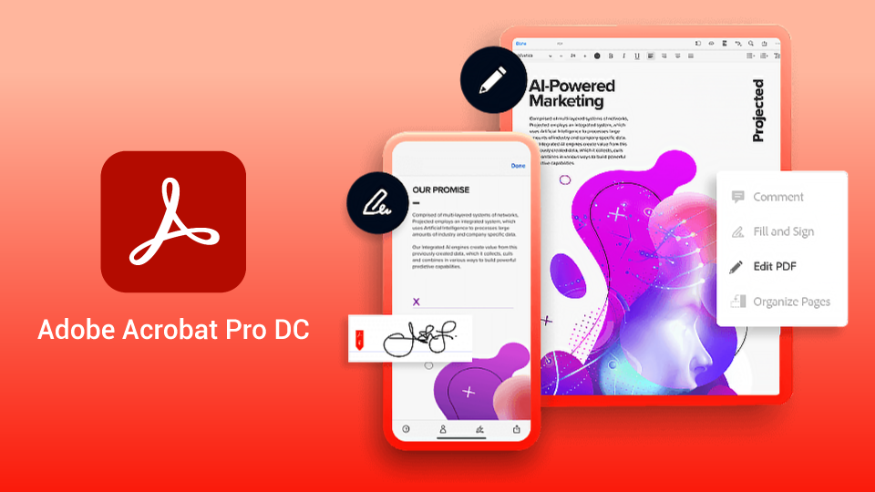
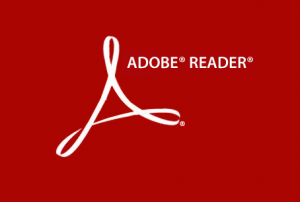
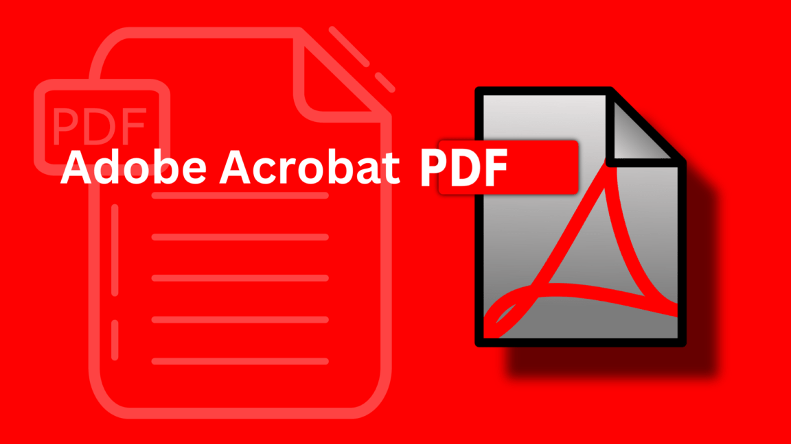

|
Adobe Acrobat |
Apresentação
|  | Adobe Acrobat Reader DC é o mais novo leitor de PDF da Adobe, sucedendo o tradicional Acrobat Reader. A sigla DC refere-se ao Document Cloud, serviço de compartilhamento na nuvem da desenvolvedora. O programa é gratuito e permite exibir, imprimir e fazer anotações em PDFs. Ele está disponível para Windows, Mac, Android e iOS. |
| A Adobe reformulou interamente a aparência do seu tradicional leitor de PDFs. O resultado foi extremamente positivo, trazendo um visual moderno, claro e organizado. A nova interface é bastante intuitiva, o que compensa a quebra da identidade visual por quem já estava acostumado com o leitor - isso é, praticamente todo mundo. Além disso, ela é sensível ao toque em qualquer plataforma, o que resulta em maior flexibilidade no uso em notebooks com tela touch, por exemplo. |  |
|  | A capacidade touch multiplataforma também possibilitou a inserção de uma ferramenta útil: a assinatura. O eSign permite assinar arquivos com o dedo ou uma caneta stylus, proporcionando grande facilidade ao enviar e receber documentos legais. Isso ficou ainda mais simples com a integração com a nuvem, já que agora os PDFs podem ser compartilhados com outras pessoas de forma nativa. |